Guía de inducción a las plataformas académicas
Escuela de Postgrado · Universidad Simón I. Patiño
1. Introducción
Conoceremos las principales plataformas académicas del diplomado. La Universidad trabaja con dos: Google Classroom y el Sistema Académico de Postgrado.
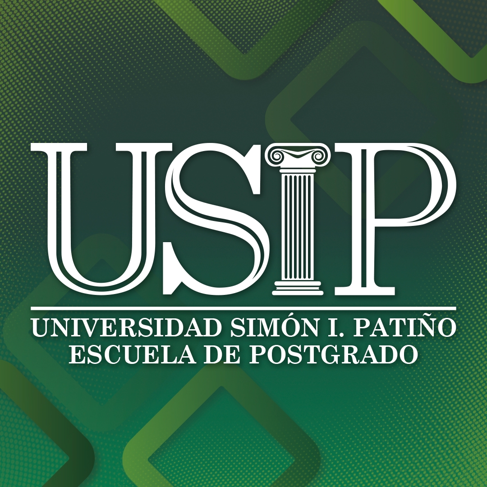
Sistema Académico de Postgrado
Datos personales, documentación y pagos.
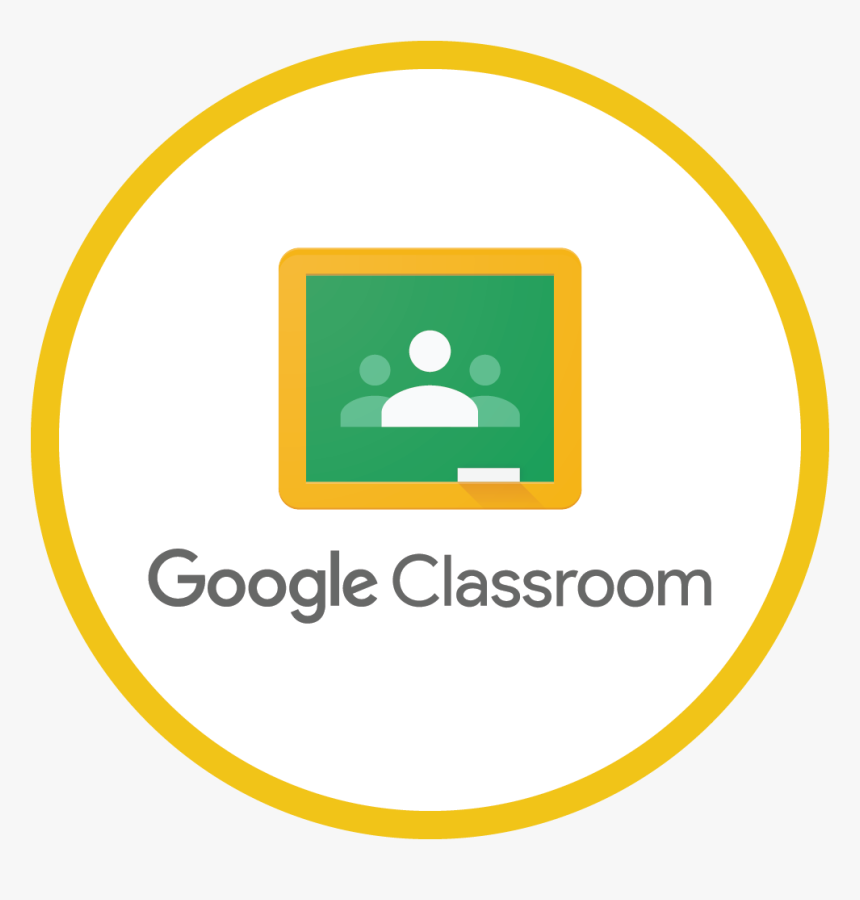
Google Classroom
Materiales de estudio, tareas, actividades y grabaciones de clases.
Revisaremos paso a paso cada una y qué tener en cuenta para evitar inconvenientes durante la formación.
2. Sistema Académico de Postgrado
2.1. Ingreso al sistema
Ingresen con el enlace compartido en el chat o escaneando el código QR.
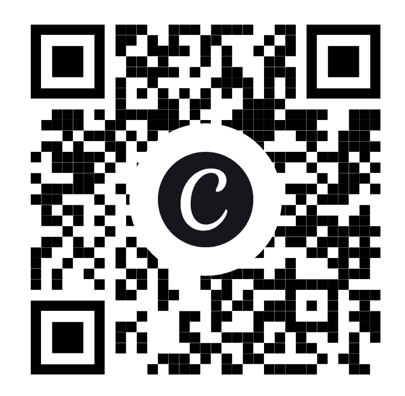
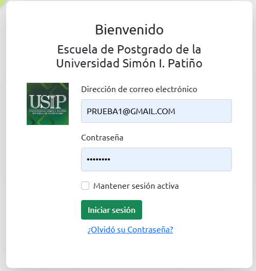
- Escriba su correo electrónico y contraseña.
- Pulse Iniciar sesión.
Dentro encontrará varios apartados. Hoy nos concentramos en dos: Perfil y Pagos QR BNB
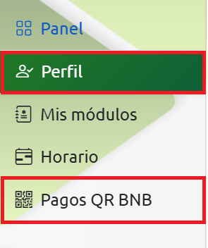
2.2. Perfil - Visualizar Datos
En Perfil se tiene 3 secciones Perfil / Editar / Documentos
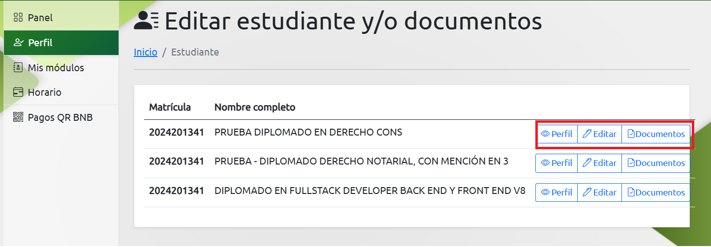
2.2.1. - Perfil
En la sección de Perfil podrá visualizar sus nombres, apellidos, número de carnet de identidad y demás datos, los cuales tiene que verificar que estén correctos.

Si hay un dato incorrecto o incompleto, ingrese a la sección de Editar y corríjalo.
2.2.2. - Editar
En la sección de Editar podrá editar nombres, apellidos, número de carnet de identidad y demás datos.
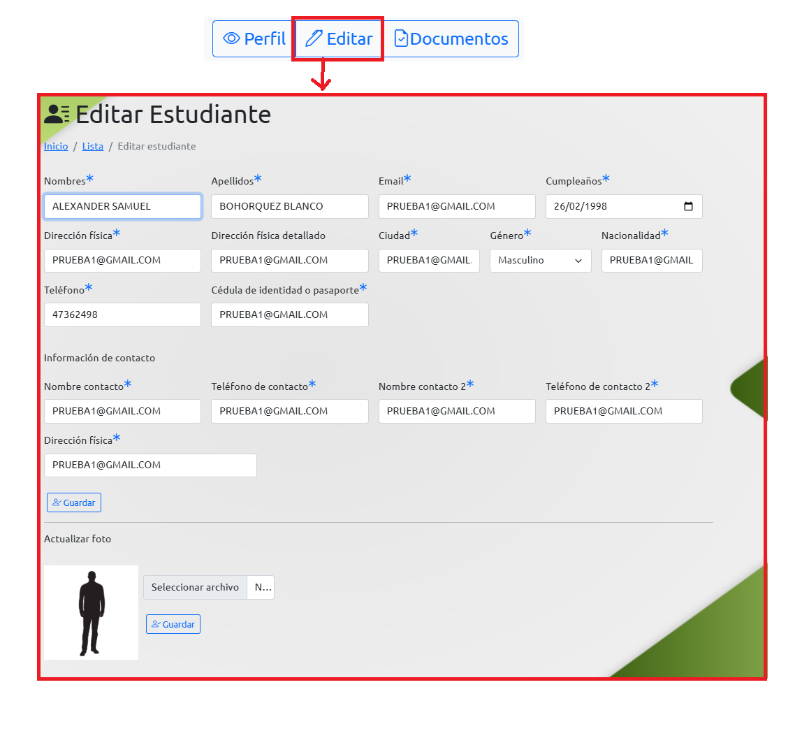
Si hay un dato incorrecto o incompleto lo corrigue y presiona en "Guardar"
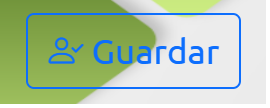
Carga de la fotografía
La fotografía es un requisito indispensable. tiene que Subirla lo antes posible
- Tamaño 4 × 4
- Fondo verde o blanco
- Vestimenta formal
- Rostro de frente y claramente visible
- Sin lentes
- Peso máximo: 500 KB
Cuide que tenga buena iluminación y el rostro se vea claro.
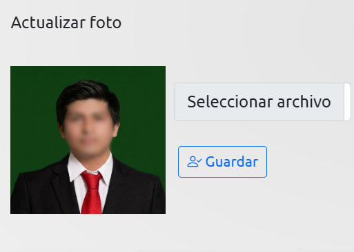
2.2.3. Carga de documentos de inscripción
En el apartado Documentos cargue lo requerido para completar su inscripción:
- Cédula de identidad
- Certificado de nacimiento
- Título profesional
- Seleccione el tipo de documento.
- Adjunte el archivo.
- Presione Subir.
- Verifique que se haya cargado correctamente.
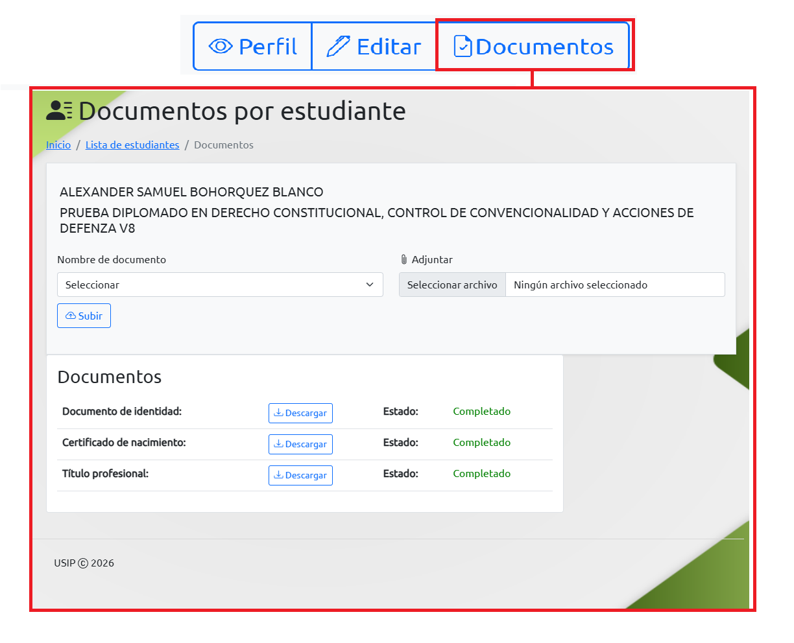
Complete este paso lo antes posible; no espere al final del diplomado.
2.5. Pagos QR BNB
Aquí pagará mensualidades y otros conceptos habilitados. Mantenga sus pagos al día según las condiciones de su programa.
- Seleccione la cuota o concepto a pagar.
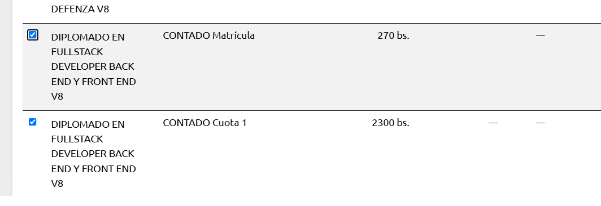
- Revise su NIT, razón social y correo electrónico.
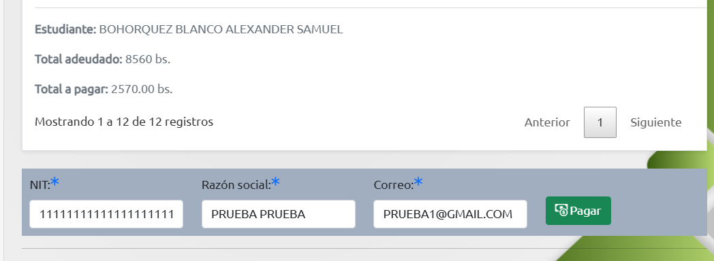
- Presione Pagar. Se genera un código QR.
- Escanee el QR desde su aplicación bancaria.
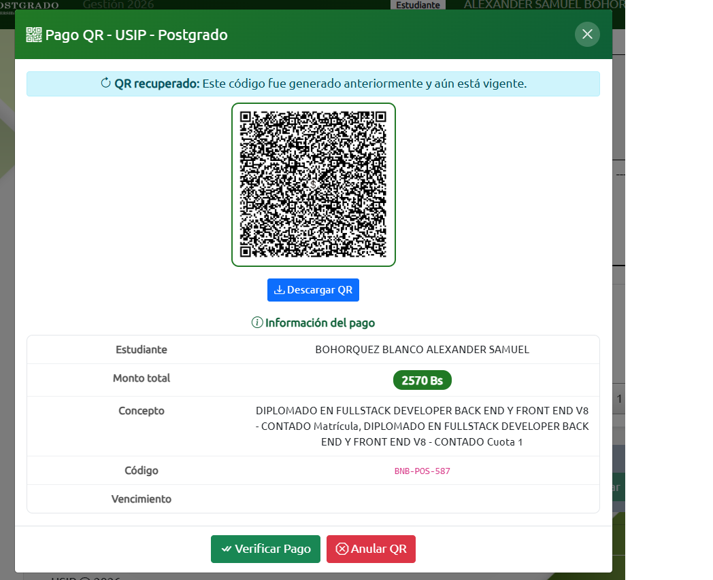
- Confirmada la operación, el sistema registra el pago como realizado. Verifíquelo y conserve su comprobante.
Con esto concluimos el Sistema Académico: sirve para mantener datos actualizados, completar documentación y gestionar pagos.
3. Google Classroom
3.1. Introducción
Es el principal espacio de apoyo académico: materiales, presentaciones, documentos, prácticas, tareas y grabaciones de las clases, además de las indicaciones de los docentes por módulo.
3.2. Tablón de actividades
Aquí están las publicaciones e indicaciones generales del diplomado:
- Reglamento institucional: léalo con atención.
- Guía de manejo de Google Classroom: explica cómo usar la plataforma y realizar actividades.
Revise ambos desde el inicio; resuelven dudas frecuentes.
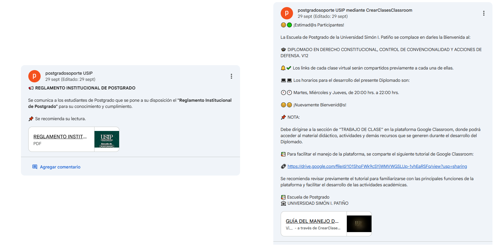
3.3. Primera sección: materiales del módulo
Todo lo del módulo que cursa: sílabo, presentaciones, prácticas, documentos y materiales complementarios.
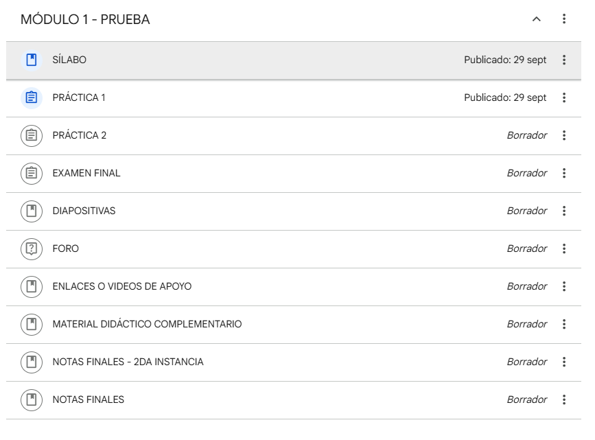
3.4. Segunda sección: clases grabadas
Primero verá una carpeta de Google Drive con las grabaciones del módulo; más abajo, publicaciones por sesión (Clase 1, Clase 2, Clase 3, Clase 4…). Sirven para repasar, reforzar temas y prepararse antes de las evaluaciones.
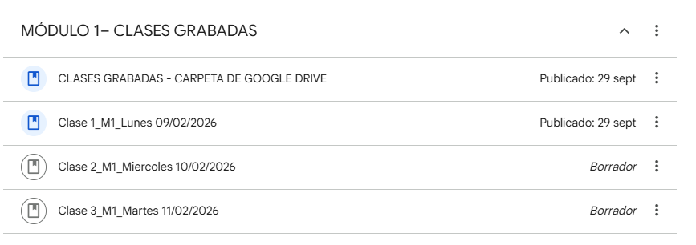
3.5. Tercera sección: material bibliografico
Aquí está material de todo el diplomado. Revise las instrucciones, fechas de entrega y requisitos.
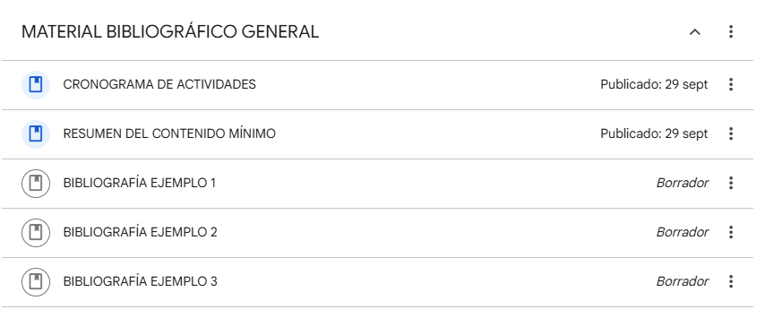
3.6. Importante: revisar el almacenamiento
Revise periódicamente que tenga espacio suficiente. Si no puede subir un archivo, verifique primero el almacenamiento.
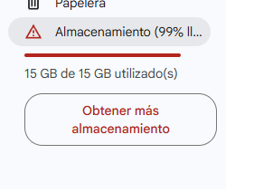
4. Google Calendar: calendario de clases
Permite ver las fechas de sus clases y recibir notificaciones o recordatorios antes de cada sesión.
Abrir Google Calendar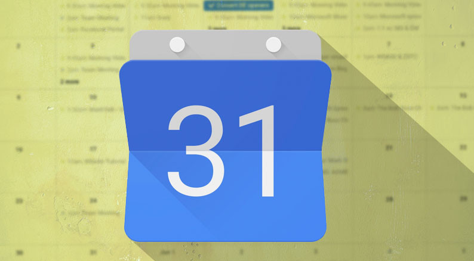
¿No aparecen las fechas del diplomado?
Hay dos causas frecuentes:
- Usa una cuenta de Google distinta a la que dio al inscribirse.
- Aún no aceptó la invitación al calendario.
- Ingrese a su Gmail y busque el correo de invitación al calendario del diplomado.
- Presione Agregar al calendario (u opción equivalente).
- Vuelva a Google Calendar y verifique que se vean las clases.
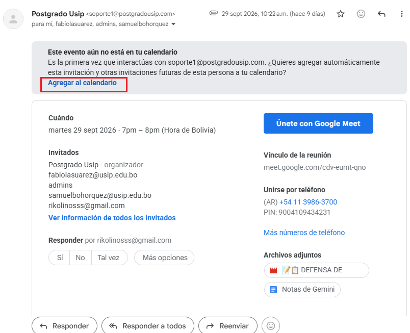
Si siguen sin aparecer, escriba a su gestor para verificar que la invitación se envió a su correo. Active las notificaciones de eventos para recibir recordatorios.
5. Resumen y recomendaciones finales
| Plataforma | Para qué la usará |
|---|---|
| Sistema Académico de Postgrado | Revisar datos personales, cargar fotografía, completar documentos y gestionar pagos. |
| Google Classroom | Consultar materiales, revisar el sílabo, realizar tareas y ver grabaciones. |
| Google Calendar | Consultar fechas de sesiones y organizar horarios. |
¡Muchos éxitos en su diplomado!
Escuela de Postgrado · Universidad Simón I. Patiño